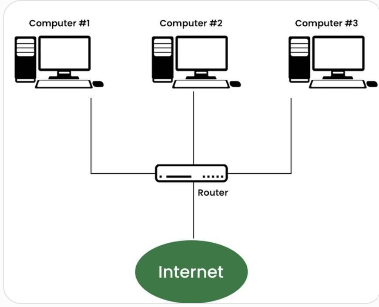

Learn the basic concepts of the Internet and World Wide Web.
The Internet is a global network that connects millions of computers and devices around the world.
Important: The Internet allows people to communicate, share information, access websites and use online services.

The World Wide Web (WWW) is a system of interconnected web pages that are accessed through the Internet.
Websites are opened using web browsers.
W3C stands for World Wide Web Consortium. It develops standards and guidelines for the Web.
These standards help websites work properly and consistently.
A web page is a single document available on the World Wide Web.
Web pages are commonly created using HTML.
A website is a collection of related web pages available under a single domain name.
The home page is usually the main or starting page of a website.
It provides links to different parts of the website.
An index page is commonly the default page of a website.
The file named index.html is commonly used as the default HTML page.
A landing page is a web page designed to receive visitors after they click a link or advertisement.
It usually focuses on a specific purpose.
A web browser is software used to access and display websites.
A web server is a computer or software that stores and delivers websites to users.
When a browser requests a web page, the server sends the page to the browser.
A domain name is the human-readable name used to identify a website.
Example: google.com
URL stands for Uniform Resource Locator.
It specifies the location of a resource on the Web.
Example: https://www.example.com
URI stands for Uniform Resource Identifier.
It identifies a resource on the Internet.
HTTP stands for HyperText Transfer Protocol.
It is used for communication between a web browser and a web server.
HTTPS stands for HyperText Transfer Protocol Secure.
It provides secure communication between the browser and server.
Important: HTTPS protects data while it is being transferred.
SSL stands for Secure Sockets Layer.
It was an older technology used to secure communication over the Internet.
TLS stands for Transport Layer Security.
TLS is the modern security protocol used to protect Internet communication.
HTML stands for HyperText Markup Language.
HTML is used to create the structure of web pages.
An IP Address is a unique numerical address assigned to a device on a network.
Example: 192.168.1.1
DNS stands for Domain Name System.
DNS converts human-readable domain names into IP addresses.
Example: google.com
nslookup is a command used to find information about domain names and their IP addresses.
Example command: nslookup google.com
A search engine is an online service used to search for information on the Internet.
Visit: Google
ChatGPT is an AI-based conversational system that can answer questions, explain concepts and assist with different tasks.
Visit: ChatGPT
A hyperlink is a clickable connection that takes a user from one web page or resource to another.
Example: Visit W3C
Hyperlinks are used to connect different web pages and websites.